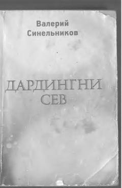

DSKasalliklarning yashirin sabablarini topib, sog'lom va baxtli yashashni o'rganing.
Mashhur psixoterapevt va psixolog Valeriy Sinelnikovning ushbu kitobi kasalliklarning ongsosti sabablari, ularni mustaqil aniqlash va davolash usullari haqida so'zlaydi. Muallif yangi dunyoqarash modeli orqali o'quvchilarga his-tuyg'ularini boshqarishni, qo'rquv va stressdan xalos bo'lishni o'rgatadi. Kitob rus tilidan Firuz Safarov va Zulfiya Safarova tomonidan tarjima qilingan.